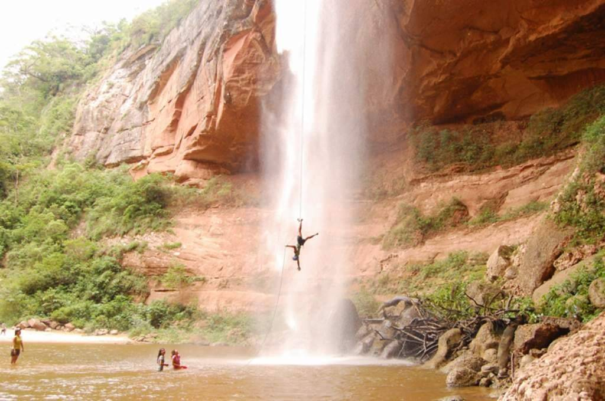
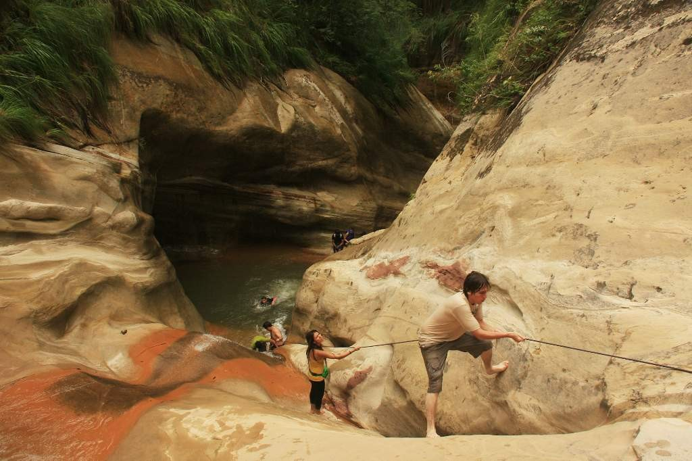
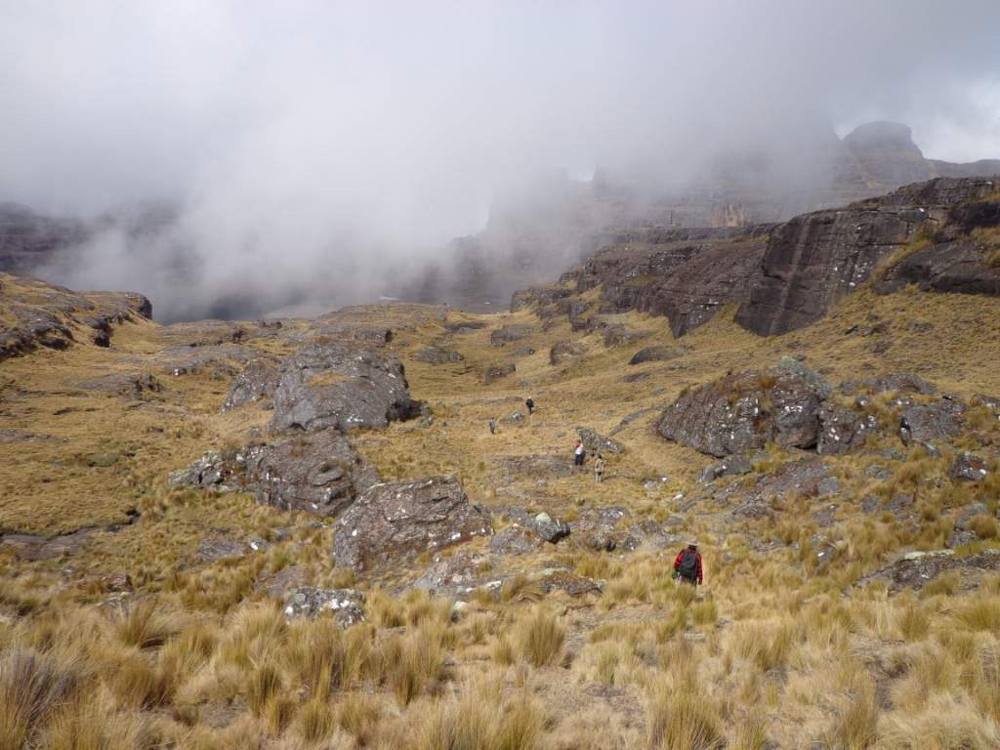
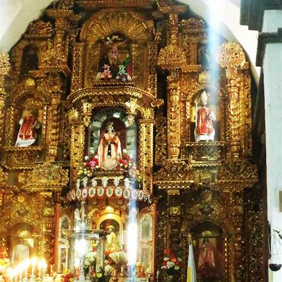

En el lugar se puede disfrutar de tres hermosas cascada que forman piscinas naturales, senderos ecológicos y miradores con impresionantes vistas. Un lugar ideal para observación de animales silvestres, y exuberante flora natural. Allí se realizará descenso con cuerda de una cascada de 90 metros

Este es un viaje de turismo aventura en las estribaciones de Castellón, un circuito único donde puedes disfrutar de los cañones del parque Aguaragüe con estribaciones y salientes rocosas que hacen del lugar una maravilla natural. Se encuentra al Sur de la ciudad de Santa Cruz en el municipio de Charagüa

Organizado por la Unidad de Turismo del Gobierno Municipal el tours Rumi Plaza está previsto para el viernes 25 y sábado 26 de marzo. Rumi Plaza se encuentra en la comunidad de Huari Pucara a 47 Km. del centro de Tiquipaya (3 horas de viaje en bus). Es un sitio donde se puede acampar, se realizan caminatas hasta las pinturas rupestres, pesca y se comparte con la comunidad. El costo del paquete es de Bs. 110 por persona, incluye transporte, guías, un plato de trucha para la cena del viernes y aporte a la comunidad. Actividades extras: Pesca, se paga por kilo a la comunidad

Copacabana, ubicada a orillas del Lago Titicaca en Bolivia, se convierte en un destino de peregrinación y celebración durante la Semana Santa. Cada año, miles de fieles, tanto en vehículos como a pie, se dirigen al Santuario de la Virgen de Copacabana para rendir homenaje a la "Virgen Morena". Esta imagen, tallada en 1580 por Francisco Tito Yupanqui, es considerada una de las más antiguas de la Virgen María en América